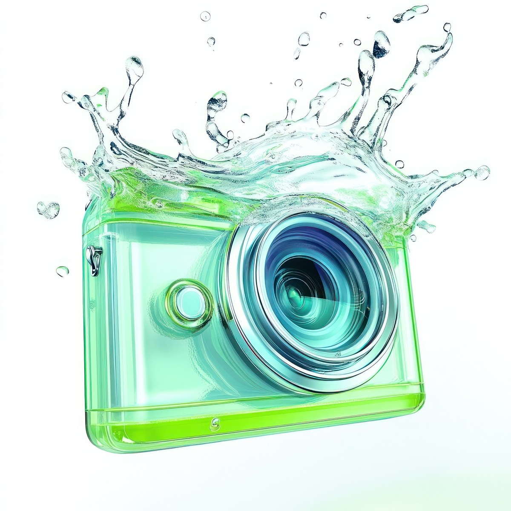

Products
From sleek digital applications to carefully crafted physical devices, Aerosoft offers a range of products designed around clarity, beauty, and ease of use. Whether you’re listening to music, editing your photos, or handling physical media, our lineup brings a cohesive, airy experience to every corner of your digital life.
Aero Music Player
Aero Music Player is a desktop audio experience built for people who actually care about how music feels. With a translucent, glass-like interface and smooth animated waveforms, it transforms your local library into something you want to look at, not just listen to. Supports all major formats with zero fuss.

Aero Photo Editor
Aero Photo Editor brings a light touch to photo editing. Powerful enough for serious work, gentle enough that it never gets in the way. Its fluid, layered workspace and soft color grading tools make every edit feel intentional and effortless, whether you’re touching up a snapshot or refining a full shoot.
Aero Disc Reader
The Aero Disc Reader is a physical device that bridges the gap between the old world and the new. Compact and elegantly finished, it reads CDs, DVDs, and Blu-rays with whisper-quiet precision, pairing seamlessly with Aerosoft software to give your physical media collection a second life in the digital age.
Product Statistics
| Product | Active Users | User Rating | Latest Version | Price | Year Released |
|---|---|---|---|---|---|
| Aero Music Player | 124,000+ | 4.8 / 5 | 2.0.1 | Free | 2024 |
| Aero Photo Editor | 87,500+ | 4.6 / 5 | 1.4.3 | Free | 2024 |
| Aero Disc Reader | 41,200+ | 4.7 / 5 | Hardware v1.2 | £79.99 | 2025 |
Supported Audio Formats
- MP3
- FLAC
- AAC / M4A
- ALAC
- OGG Vorbis
- DSD / DSF
- WAV / AIFF
Getting Started with Aero Music Player
- Download the installer from this page
- Run setup and follow the on-screen prompts
- Point the library scanner at your music folder
- Let Aero index your collection (under a minute)
- Hit play and enjoy the experience